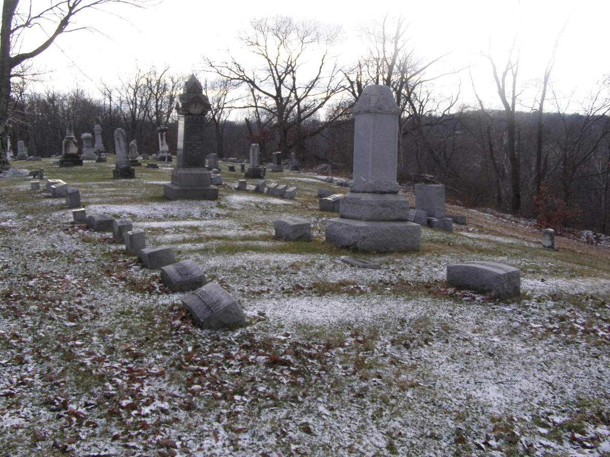

Route 79 on the far, nearly rural south side of Newark runs beside one of the most remarkable cemeteries in Ohio: Mount Calvary. The ground slopes dramatically, so that the cemetery is mostly either above or below you as you drive by, but halfway along the gates stand (almost always) open.
Without a doubt this is one of the most beautiful places I've visited. Its 113 acres (80 of them developed) spread across a hill above Newark, and the view is hard to ignore.

I visited on Christmas Eve 2103--one of the coldest days of the year. 2014 would turn out to be even colder, but it was still a brisk zero degrees. I had visited my friend Stacey, who lives minutes away and has known the place her whole life.
This is obviously a place to visit in the daytime. Ghost stories circulate about it, however, and I've been told of ghostly occurrences by people I know personally, and haunted places are undeniably sensational after dark. It's important to be aware that a cemetery association actively maintains and monitors Mt. Calvary--I've seen the groundskeeper there at least twice--and that, like essentially all cemeteries, it's technically closed and off-limits from dusk 'til dawn.
It was established to serve the Catholic citizens of nearby small towns and, increasingly as the twentieth century wore on, the expanding city of Newark.
I'd like to know more about the specific people buried here. It seems certain that a few were prominent, accomplished folks. But so far the best I've been able to find is a bland list of names, all of which can be found on their gravestones.

The best-known spooky stuff is located in the northern part of the cemetery, on the slope facing Newark. The gravel road curves around a steep part of the hill here.
On the highway-side curve there is a memorably realistic state of Christ with his eyes cast toward heaven.
Even spookier is the statue of a woman with her veiled head bent low; her face is so obscured that you have to get really close to make it out. Her broken-off hand makes her look like an amputee.
One side of the curve is walled to keep the earth in place. Built into this wall is a mausoleum straight out of Dracula.
Ghost stories I've heard firsthand about Mt. Calvary seem to center around this spot. Chris and Sam, friends of mine, witnessed a girl headed down the gravel away from them, around the curve and out of sight--and vanished.
The oldest American graves belong to immigrants, and in Ohio that most often means Irish or German. St. Joseph's in Perry County, the oldest Catholic church in Ohio, has a churchyard full of stones that say someone was born in--for example--County Tyrone, Ireland. It must be a useful resource for genealogists.
Speaking of immigrants, the Sforzas are permanent residents of Mt. Calvary with an attractive joint-design tombstone, their photos embossed on each half.
Besides offering something of a mystery, the mother-daughter tombstone pictured above demonstrates a glitch in cemetery planning. Naturally we all remember the worldwide chaos that began at midnight when December 31, 1999, became January 1, 2000. The power grid went down; bank accounts and credit records were reset to zero; airplanes fell from the sky and countless thousands of computerized systems failed simultaneously, while gangs of homicidal thugs terrorized the unpoliced streets. Long decades will pass before America recovers from the disaster that was the "Y2K Bug."
If you're a teenager, you might not recall the fact that people in the late 1990s actually went around believing this crap was about to happen. The Art Bell radio show in particular was dedicated to "Y2K" alarmism. It was quite funny beforehand, and even more pathetically hilarious after the calendar's odometer rolled over and nothing at all happened to the world's automated infrastructure. The transition to years beginning with a 2 did have one undeniable effect in cemeteries, where forward-thinking plot owners accidentally outlived the "19" they'd had engraved as the prefix to their presumptive death dates. I don't know why Agnes's daughter Mary was supposed to be buried alone with her mother (sharing the same stone, no less); I believe it's the norm in this country for children to reach adulthood, marry, and form families of their own. Or maybe Mary is 121 years old.
(Honestly, how much thought does it take to realize a particular person might outlive their century? Do the math on your fingers! Also, does it really save very much time to pre-chisel two digits out of an eventual four?)
My very good friend Stacey Rose lives just a couple of miles from this graveyard and has grown up hearing stories about it. Her experiences there are almost too numerous to mention--and many are supernatural in nature.

Stacey's view is that any number of specific places inside Mt. Calvary Cemetery are active spiritually; I'll attempt to enumerate several of them as I learn more of them. In the meantime, this is one cemetery whose beauty and history alone make it worth seeking out and exploring on your own.
Fun fact: for a couple of months I had this place misidentified on the website; I thought the place I visited was Cedar Hill Cemetery. But it wasn't, and a handful of knowledgable folks politely set me straight. So please accept my apology for such sloppy research. The real Cedar Hill Cemetery has its own supernatural reputation, and you can read about it here.
Find-a-Grave: Mt. Calvary Catholic Cemetery
Grave Addiction: Mt. Calvary Catholic Cemetery
Lost and Found Ohio: Mt. Calvary Catholic Cemetery
Rootsweb: Mt. Calvary Catholic Cemetery
Back
forgottenohio@yahoo.com
facebook.com/andy.henderson.319